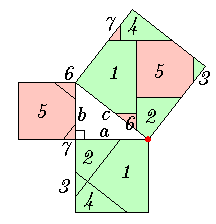

| The figure shows a dissection method of proving the Theorem of Pythagoras. The method seems to be very complex, but it can be understood as one special case of simple dissection methods. Using the applet, we can obtain infinitely many methods of dissection. Perigal's proof is classified in the same category. |  |
How to use the Applet
|